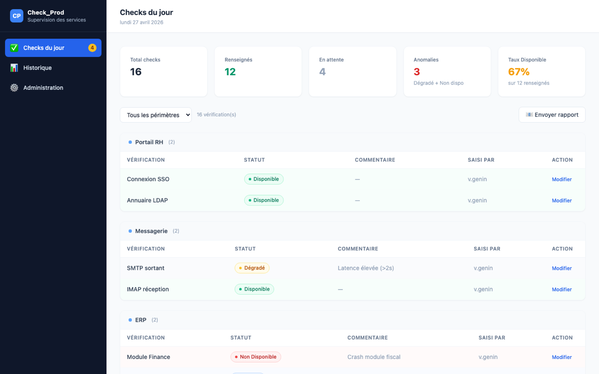
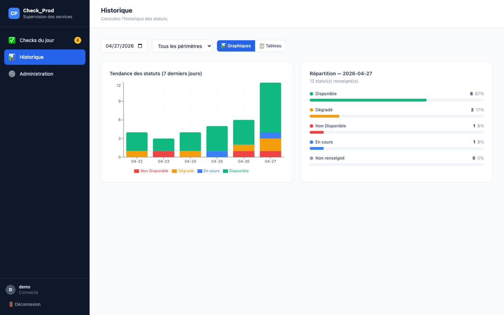
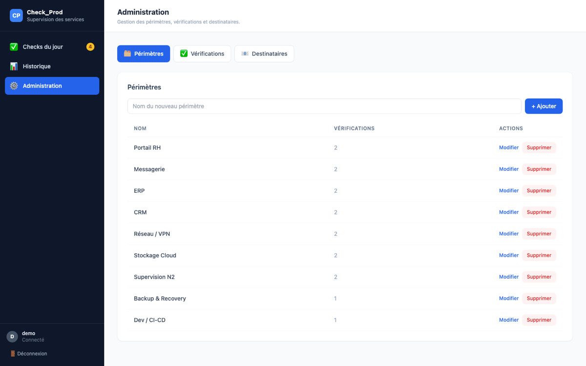

Check_Prod — IT Service Monitoring · Bouygues Telecom
Full-stack web application designed and deployed in production to automate daily IT service status monitoring. Teams report the status of each service (Available / Degraded / Unavailable), review 7-day trends and send automated reports.
→ Replaced a critical manual process · Time savings of up to 1h/day · In production across multiple teams · Improved data reliability
React
TypeScript
NestJS
Oracle SQL
MySQL
Git / GitLab
ServiceNow